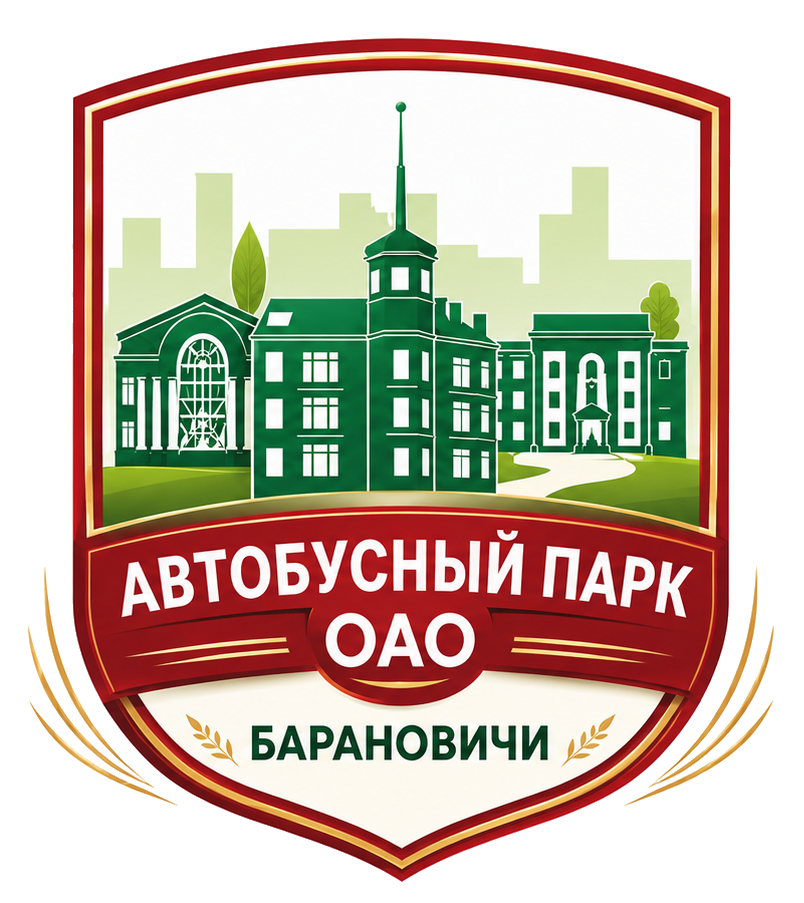

Telegram Mini App автобусного парка г. Барановичи
Цифровой транспортный помощник для пассажиров, администрации и служб автобусного парка:
расписание, маршруты, обращения, новости, услуги, реклама и уведомления в одном приложении внутри Telegram.
Суть проекта
Что создается
Проект представляет собой полноценную цифровую систему для городского автобусного парка Барановичей.
Пользователь открывает приложение прямо из Telegram и за несколько секунд получает нужную информацию:
какой маршрут выбрать, когда будет ближайший автобус, куда обратиться и какие новости появились.
01
Для пассажиров
Быстрое расписание, поиск маршрута и остановки, избранное, напоминания, новости и обращения в администрацию.
02
Для администрации
Панель управления обращениями, расписанием, рекламой, новостями, уведомлениями и сотрудниками.
03
Для служб парка
Разделение ролей: диспетчер, модератор, менеджер рекламы, специалист по обращениям и СТО.
04
Для развития сервиса
База данных, Telegram-интеграция, загрузка файлов, история изменений и возможность размещения на сервере.
Маршруты147
Остановки по направлениям4006
Времена отправлений50 951
Главная идея: не заставлять человека искать информацию по разным сайтам и чатам, а дать все основные действия
в одном понятном интерфейсе внутри Telegram.
Пользовательский сценарий
Что может пассажир
Главный экран
Приветствие, быстрые действия, переход к расписанию, обращениям, новостям, услугам и информации об автобусном парке.
Расписание
Выбор маршрута, направления, остановки и типа дня. Пользователь видит ближайшее время и список отправлений.
Маршруты
Отдельный список всех городских маршрутов от 1 до 33 с поиском по номеру, конечной или остановке.
Остановки и поиск
Поиск остановки внутри маршрута помогает быстро перейти к нужному месту без ручного пролистывания.
Избранное
Можно сохранить любимый маршрут, остановку и удобное время, например ежедневную поездку на работу.
Будильник
Напоминание за 5, 10, 15, 20 или 30 минут до автобуса через сообщение от Telegram-бота.
1
Открыть приложение
Пользователь нажимает кнопку в Telegram-боте и попадает в Mini App.
2
Выбрать расписание
Находит маршрут, направление и остановку через понятные поля и быстрый поиск.
3
Получить время
Система показывает ближайшие отправления, а пользователь может сохранить или поставить напоминание.
Обращения и коммуникация
Связь пассажира с автобусным парком
Типы обращений
Вопрос, жалоба, предложение, благодарность, реклама и услуги. Пользователь выбирает тему и описывает ситуацию.
Файлы и голос
К обращению можно прикрепить изображение, файл или записать голосовое сообщение прямо в Mini App.
Онлайн-чат
Чат появляется тогда, когда обращение создано. Администратор отвечает пользователю, после решения диалог закрывается.
Фильтр сообщений
В проект добавлена защита от нецензурных выражений в обращениях, чтобы снижать нагрузку на модерацию.
Такой формат уменьшает количество потерянных обращений: все сообщения попадают в единую панель,
где их можно распределять по ролям и закрывать после обработки.
Новости и информирование
Новости
Публикация важных объявлений, изменений расписания, служебной информации и материалов для пассажиров.
Изображения
В новости можно добавлять картинки, а пользователь может открыть изображение в просмотре.
Просмотры и лайки
Есть счетчики просмотров и реакций, чтобы понимать интерес к публикациям.
Новые материалы
Если пользователь не видел свежую новость, в нижнем меню появляется индикатор.
Услуги предприятия
Дополнительные разделы приложения
Помимо расписания приложение показывает услуги автобусного парка и дает возможность быстро отправить заявку
ответственному специалисту.
Услуги СТОРемонт двигателя, тормозной системы, ходовой части, КПП, электрооборудования, кондиционеров, сварочные работы и плановое обслуживание.
Сервисный центр МАЗОтдельное направление для консультаций, записи и обработки заявок по сервисному обслуживанию.
Другие услугиАренда автобусов и помещений, столовая, медицинское и техническое освидетельствование, реклама на бортах автобуса.
О насКонтакты, приемная, адрес, режим работы, руководство, сайт и быстрый переход к карте.
Карта и навигация
Для маршрутов и адресов используется мягкая интеграция с Яндекс.Картами: приложение открывает поиск по нужному маршруту
или адресу. Например, для маршрута формируется понятный запрос вида «автобус 2 Барановичи».
Админ-панель
Что может администрация
| Раздел |
Возможности |
| Обращения |
Просмотр заявок, фильтрация, ответы в чате, закрытие диалогов, очистка обращений. |
| Расписание |
Редактирование маршрута, направления, остановки, цвета, добавление и удаление времени, журнал изменений. |
| Реклама |
Создание рекламных материалов, сроки размещения, управление показом, удаление и редактирование. |
| Новости |
Мини-редактор текста, изображения, публикация новостей, просмотры и реакции пользователей. |
| Уведомления |
Отправка Telegram-пушей подписчикам без лишних ссылок, очистка формы и история уведомлений. |
| Сотрудники |
Добавление Telegram ID, имени и роли. У сотрудника появляется доступ к нужной панели. |
Роли доступа
АдминистраторПолный доступ ко всем разделам и настройкам.
Специалист по обращениямВидит вопросы, жалобы, предложения и благодарности.
Менеджер рекламыРаботает только с рекламой и рекламными обращениями.
ДиспетчерРаботает с обращениями, уведомлениями и расписанием.
МодераторРаботает с обращениями и новостями.
Специалист СТОМожет обрабатывать заявки по услугам и сервису.
Telegram-бот
Роль бота в проекте
Точка входа
Бот приветствует пользователя и предлагает открыть приложение автобусного парка города Барановичи.
Mini App внутри Telegram
Пользователь не устанавливает отдельное приложение: все открывается в Telegram.
Напоминания
Бот отправляет сообщение, когда до автобуса осталось выбранное количество минут.
Админ-доступ
Для сотрудников с ролью может появляться кнопка управления или доступ к админ-панели.
Telegram-бот работает как удобный канал связи: открывает Mini App, принимает пользователей, отправляет напоминания,
уведомления и помогает не терять контакт с пассажиром.
Техническая часть
Как устроен проект
Node.js 24+
SQLite
Telegram Bot API
Telegram WebApp
HTML/CSS/JavaScript
Nginx + HTTPS
PM2
База данных вместо JSON
Расписание, обращения, чаты, реклама, новости, сотрудники, подписчики и уведомления хранятся в SQLite.
API для приложения
Mini App и админ-панель получают данные через серверные API, что позволяет развивать систему без ручных файлов.
Импорт расписаний
Реальные маршруты импортируются из XML-файлов: маршруты, направления, остановки и времена отправления.
Безопасность
Есть проверка Telegram WebApp, роли сотрудников, ключ администратора и разделение прав доступа.
Файлы и медиа
Поддерживаются загрузки изображений, вложений и голосовых сообщений для обращений и новостей.
Проверки проекта
Есть smoke-test, UX-check, verify и нагрузочный sanity-тест для контроля стабильности.
Польза
Что дает проект автобусному парку
Меньше хаосаРасписание, новости, обращения, услуги и реклама собраны в одной системе.
Быстрее для пассажировЧеловек может понять маршрут и время отправления без звонков и поиска по разным сайтам.
Контроль обращенийАдминистрация видит сообщения, вложения, историю диалога и может закрыть обращение после решения.
Гибкое расписаниеРасписание можно редактировать через админ-панель, а не вручную менять файлы.
Роли сотрудниковКаждый сотрудник видит только нужные ему задачи: обращения, рекламу, новости, расписание или услуги.
Готовность к серверуПроект можно разместить на VPS с доменом, HTTPS, PM2 и резервным копированием базы.
Что можно развивать дальше
- онлайн-координаты автобусов, если появится источник GPS-данных;
- личный кабинет сотрудника прямо внутри Telegram;
- расширенная аналитика по обращениям, новостям, рекламе и популярным маршрутам;
- экспорт расписаний и отчетов для внутренней работы;
- интеграция с внешними картами и официальными информационными системами.